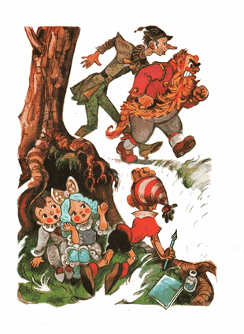

Karabas Barabas dan Duremar perlahan berjalan melewati goa.
Selama pertarungan di lapangan, si penjual lintah-obat berjongkok ketakutan di balik semak-semak. Ketika semuanya telah usai, dia menunggu sampai Buratino dan Artemon menghilang di balik rerumputan gondrong, dan barulah kemudian dia dengan susah payah mencabut jenggot Karabas Barabas yang menempel di pohon pinus.
- Bocah itu telah menyusahkanmu /Duremar berkata/ Tengkuk anda harus dibekam dengan dua lusin lintah paling mujarap.
Karabas Barabas meraung:
- Per seratus ribu setan! Cepat kejar berengsek-berengsek itu!
Karabas Barabas dan Duremar menelusuri jejak-jejak kaki para buronan itu. Mereka menyibak-niyibak ilalang, memeriksa setiap penjuru lapangan, menyusuri galangan.
Mereka melihat abu bekas api unggun di sela-sela akar pohon pinus tua, tetapi di kepala mereka tidak sedikitpun terpikir bahwa di goa itu si manusia kayu bersembunyi dan bahkan menyalakan api unggun.
- Akan kuserut dengan pisau lipat si berengsek Buratino itu menjadi serpihan! /Karabas Barabas menggerutu/
Para buronan itu bersembunyi di penjuru goa.
Apa yang harus dilakukan sekarang? Lari? Tapi Artemon, dibalut perban dan sudah terlelap. Anjing itu perlu istirahat selama 24 jam untuk bisa kembali pulih.
Masa harus menelantarkan anjing jagoan itu sendirian di dalam goa?
Tidak, tidak, kabur bersama, matipun harus bersama.
Buratino, Pierrot dan Malavina di penjuru goa, sambil membekap mulut mereka, berunding cukup lama. Keputusannya adalah: menunggu di sini sampai pagi, menyamarkan mulut goa dengan ranting-ranting, dan meracik jamu-jamu supaya Artemon segera pulih. Buratino berkata:
- Bagaimanapun, aku penasaran ingin mencari tahu rahasia Karabas Barabas, di manakah pintu itu, yang harus dibuka oleh kunci emas itu berada. Di balik pintu itu tersembunyi sesuatu yang luar biasa menakjubkan, yang akan mengantarkan kita menuju kebahagiaan.
- Saya takut kalau harus sendiri di sini tanpa kamu, saya takut /Malavina mengerang/
- Apa gunanya Pierrot untukmu?
- Ah, dia hanya membaca puisi...
- Aku akan melindungi Malavina seperti seekor singa /Pierrot berkata dengan suara serak, seperti predator besar berbicara/ kau belum tahu siapa aku...
- Bagus, Pierrot, begitu dong dari dulu!
Lalu Buratino beranjak pergi menyusuri jejak Karabas Barabas dan Duremar.
Tak lama kemudian dia menemukan mereka. Sutradara teater boneka itu tengah duduk di tepian sungai, Duremar menempelkan kompresan dari daun pohon kuda pada benjol di kepalanya. Sayup-sayup terdengar suara keroncongan dari perut kosong Karabas Barabas dan bunyi menciut sepi dari perut kosong si tukang lintah obat.
- Signor, kita perlu menyegarkan diri, /kata Duremar/ pencarian si berengsek itu dapat berlangsung hingga larut malam.
- Kali ini aku akan makan babi utuh dan beberapa ekor bebek, /jawab Karabas Barabas dengan muram/
Dua sekutu itu pun berlalu menuju kedai "Tiga Impun", terlihat papan namanya di atas bukit. Lantas, mendahului Karabas Barabas dan Duremar, Buratino bergegas pergi ke sana, merunduk di dalam rerumputan, supaya tidak ketahuan.

Di dekat pintu kedai itu, Buratino mengendap-endap menghampiri seekor ayam jago besar, yang sedang mematuk-matuk biji-bijian dan sisa-sisa bubur ayam, dengan gagah mengibas-ngibaskan jawer merahnya, cekernya menoreh-noreh dan dengan kesal berkokok memanggil ayam-ayam betina untuk melayani:
- O'o'o.!..
Buratino mengulurkan remah-remah kue almond di telapak tangannya.
- Silahkan, signor panglima jendral.
Ayam jago itu dengan sinis menatap sebelah mata pada si bocah kayu, tetapi dia tidak tahan dan lantas mematuk-matuk ke telapak tangannya.
- O'o'o.!..
- Signor panglima jendral, saya harus masuk ke dalam kedai, tapi jangan sampai ketahuan si master. Saya akan bersembunyi di balik ekor indah anda yang berwarna-warni, lalu anda tuntun saya sampai ke dekat perapian. Oke?
- O'o!.. /kokok si ayam jago lebih gagah/
Ayam itu sebenarnya tidak tahu apa-apa, tetapi supaya tidak kelihatan bahwa dia tidak tahu apa-apa, dia berlagak berjalan ke pintu kedai yang terbuka itu.
Buratino berpegangan pada ketiak di belakang kedua pahanya, menyamarkan diri dibalik ekornya, dan meniru langkahnya berjalan ke dapur, ke dekat perapian, di mana master botak pemilik kedai itu sedang sibuk menggiling-giling dan mengoseng-oseng di perapian.
- Minggir kau, daging boiler tua! /bentak si master pada si ayam jago menghentak-hentakkan kaki/ syuh syuh syuh! /dengan kesal mengusir ayam yang ketakutan itu ke luar/
Buratino, tanpa ketahuan, menyelinap melewati kaki sang master, lalu berjongkok di belakang kendi tanah liat yang besar.
Tak lama kemudian, terdengar suara Karabas Barabas dan Duremar
pemilik kedai itu membungkuk rendah, pergi keluar menyambut kedatangan mereka.
Buratino memanjat masuk ke dalam kendi besar itu dan sembunyi di situ.